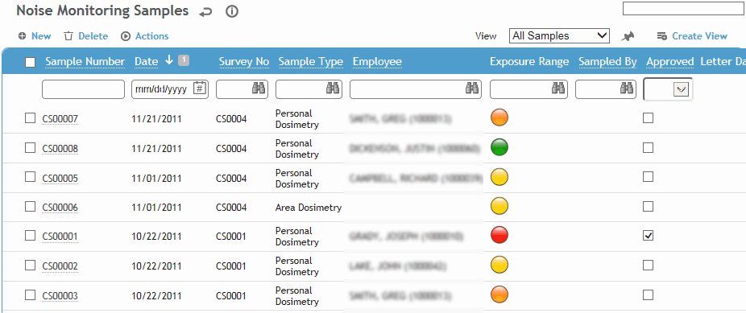
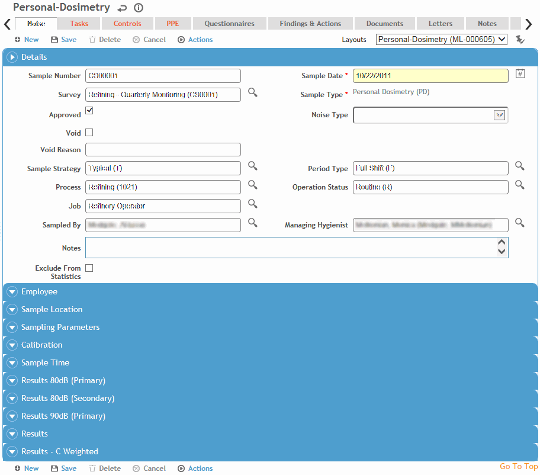

While entering information about a monitoring sample, you can enter sample details such as employee, process, operation status, sample location, and geolocation coordinates (if added to a custom layout).
You can link a sample to a survey (users assigned the technician/consultant role can only link a sample to a survey if they are the survey creator or have been granted editor access). If you want to see more details of the survey before creating the sample, open the survey first. You can create a sample directly from the survey’s Sample tab. For more information, see Creating a Survey.
In the Industrial Hygiene menu, click Noise Monitoring.

Click a link to open a sample, or click New.
To reduce data entry, you can copy a sample record. Open the record and choose Actions»Copy. All information is copied except details unique to the sample (e.g. employee, calibration data, results). Change information as required (and complete the mandatory fields) to complete the new sample.
To open all samples with the same survey number, select the checkbox beside a sample that is linked to that survey number, then choose Actions»Open All Samples Linked to Same Survey Number. The first sample opens, and navigation buttons below the tabs allow you to scroll through each sample. You may also use this action to view samples that are part of a linked sample set.
Depending on your system settings, sample numbers may include a set prefix. If the sample number exceeds 999999, you will be prompted to change your the prefix in the system settings so the numbering can restart at 000001.
Select the layout you wish to use (e.g. Personal Dosimetry, Area Dosimetry, Source Dosimetry, Area and Source) or a custom layout that you have created.
The layout determines which fields are available on the form. Personal dosimetry samples will have a field available to note employee. Any of the dosimetry layouts will have fields for dosimetry data (i.e. TWA, Dose, projected Dose); Area and Source layouts will have fields for sound level measurements and octave band analysis.

Enter information in the fields on the Noise tab. Most of the fields are self-explanatory, but keep in mind the following:
The Managing Hygienist defaults to the hygienist linked to the Sampled By user, but you can change it. The look-up for this field is limited to users flagged as “IHUser” and “Managing Hygienist”.
Select Exclude from Statistics to exclude the sample from the Detailed Noise Monitoring Results report and the statistical analysis run from the IH Risk Assessment module. This exclusion can be overridden when running the queries.
Employee information (employee name, geographic location and so on) is current. If necessary, change the information to correspond to the situation that existed when the sample was taken.
To associate other employees with a personal area sample, use the Representative Employees tab (after the sample is saved).
Enter information about the sampling equipment and sample results. Enter the exchange rates and criterion levels if they were not set in your system settings. The Tertiary Exchange Rate and Tertiary Criterion Level relate to the fields in the Results-C Weighted section.
Click Save.
To print all information on the Noise tab, and any questionnaire included, click Print.
For information about the remaining tabs, see Completing the Sample Record - Common Tabs.
Set up custom layouts to track whether or not an employee has been provided an adequate level of hearing protection. The calculation will be based on the hearing protection worn by the employee and the employee's measured noise exposure. For information about creating custom layouts, see Defining Form Layouts. To configure this calculation:
On a custom Equipment layout, add the Noise Reduction Rating (NRR) field.
Select the appropriate option in the “Effective Noise Exposure calculated based on” system setting:
If you select one of the NRR options, the Noise Reduction Rating (NRR) field has been added to a custom Equipment layout and is populated for “Hearing Protector” equipment records.
If you select the PAR option, ensure that the PAR (dB) Binaural field is added to a custom Noise Monitoring layout, and that the relevant data is available for the employee in the Hearing Fit module.
On a custom Noise Monitoring layout:
Add the Hearing Protection field (a picklist of all the equipment flagged as “Hearing Protector” equipment type).
Add the Noise Reduction Rating field (displays the value for the selected Hearing Protection equipment).
Add the PAR (dB) Binaural field; this displays the most current value from the Hearing Fit module for the employee.
Add any of the calculated Single Protection and/or Dual Protection calculated fields as required. If you add the Dual Protection fields, also add the Dual Protection checkbox.